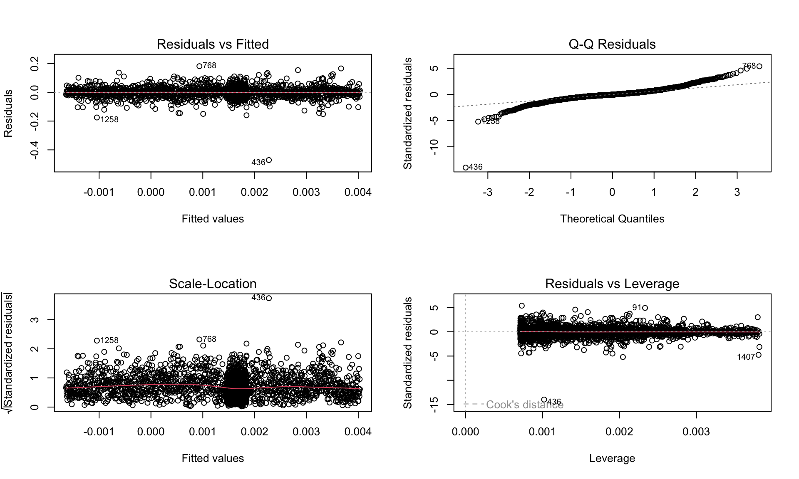

Call:
lm(formula = Bitcoin_ret ~ time_index + intervention + time_after_intervention,
data = its_df)
Residuals:
Min 1Q Median 3Q Max
-0.47090 -0.01414 -0.00108 0.01410 0.18156
Coefficients:
Estimate Std. Error t value Pr(>|t|)
(Intercept) 4.035e-03 1.801e-03 2.241 0.0251 *
time_index -4.037e-06 2.219e-06 -1.819 0.0690 .
intervention 3.484e-03 2.755e-03 1.265 0.2060
time_after_intervention 3.667e-06 4.106e-06 0.893 0.3718
---
Signif. codes: 0 '***' 0.001 '**' 0.01 '*' 0.05 '.' 0.1 ' ' 1
Residual standard error: 0.03373 on 2447 degrees of freedom
Multiple R-squared: 0.0014, Adjusted R-squared: 0.0001753
F-statistic: 1.143 on 3 and 2447 DF, p-value: 0.3302
Interpretation: Did the FTX collapse create a meaningful structural change?
Based on the ITS regression:
Immediate level shift: The coefficient for the intervention date is 0.00348, but it is not statistically significant (p = 0.206). → This means Bitcoin did not experience a clear jump or drop in average returns on the exact day of the collapse.
Pre-event trend: The time_index coefficient is slightly negative and borderline significant (p ≈ 0.069). → Bitcoin returns showed a mild downward drift heading into the event.
Post-event trend change: The “time_after_intervention” slope is very small and not significant (p = 0.37). → The slope of returns after the event did not materially change.
Conclusion:
There is no statistical evidence that the FTX collapse created a persistent shift in Bitcoin’s return levels or trend. Short-term volatility was visible around the event, but there is no long-term structural break in the daily returns.
Interrupted Time Series of Bitcoin Returns Around the FTX Collapse
Distribution of Daily Bitcoin Returns Before vs. After the FTX Collapse
Code
ggplot(its_df, aes(x =factor(intervention, labels=c("Before","After")),y = Bitcoin_ret)) +geom_boxplot(fill="lightblue") +labs(title="Distribution of Bitcoin Returns Before vs After FTX Collapse",x="Period", y="Daily Log Return") +theme_minimal()
The distribution of returns before and after FTX looks nearly the same:
Medians are almost identical
The spread is similar
Extreme outliers exist in both periods
Slightly fewer huge negative outliers after the collapse
This matches the regression: the event did not shift the average return or the variance in a meaningful way.
Diagnostic Plots for Interrupted Time Series Regression of Bitcoin Return
Code
par(mfrow=c(2,2))plot(its_model)

Code
par(mfrow=c(1,1))
The FTX collapse caused a temporary volatility spike but no meaningful long-run shift in Bitcoin’s return levels or trend. Regression coefficients for level change and slope change are not statistically significant, and pre-/post-event distributions look nearly identical. Overall, Bitcoin quickly reverted to its normal noisy behavior.